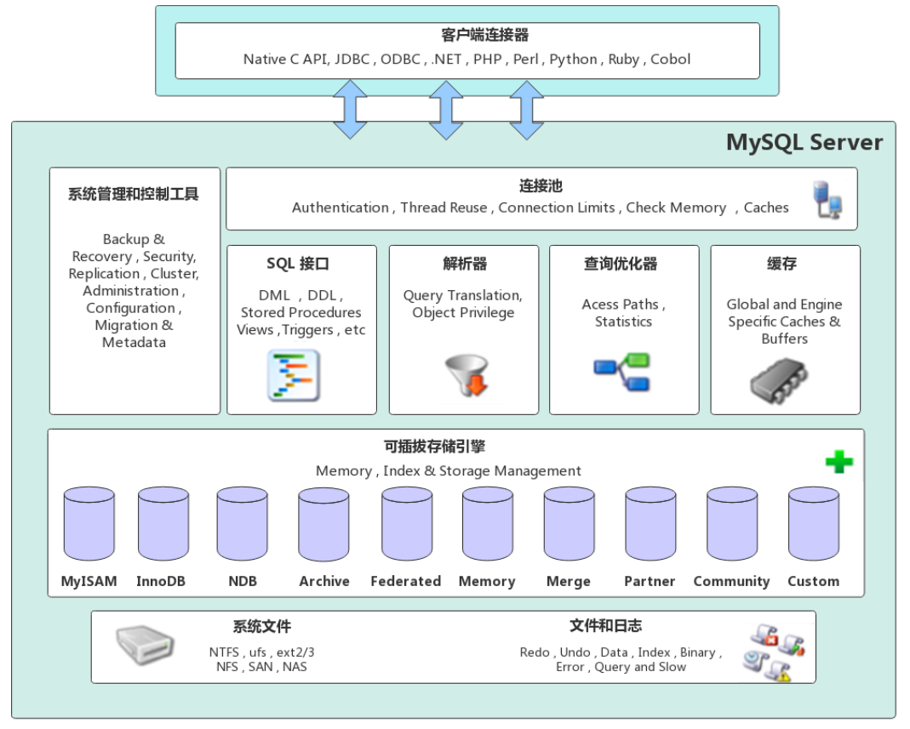
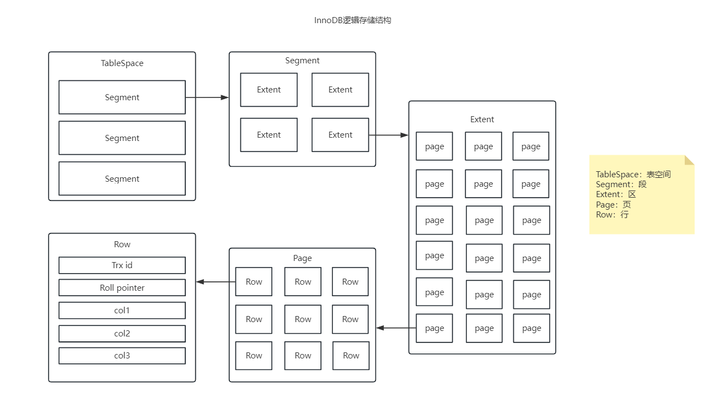
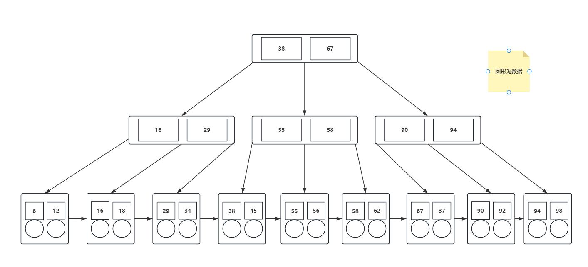
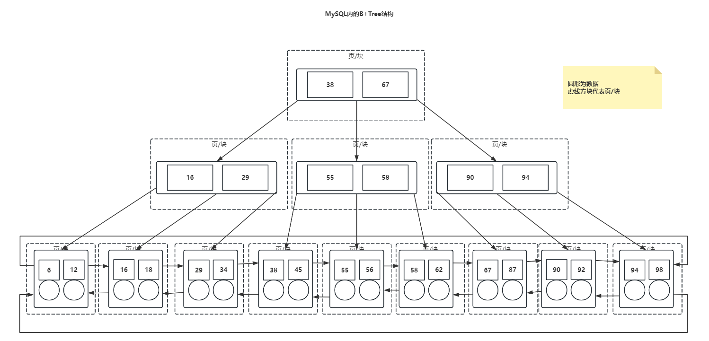

- MySQL是一个数据库管理系统
- MySQL是一个关系型数据库
| 名称 | 全称 | 简称 |
|---|
| 数据库 | 存储数据的仓库，对数据进行有组织的存储 | DataBase(DB) |
| 数据库管理系统 | 操作和管理数据库的大型软件 | DataBase Management System(DBMS) |
| SQL | 操作关系型数据库的编程语言，定义了一套操作关系型数据库的统一标准 | Structured Query Language(SQL) |
- 主流的关系型数据库管理系统：
Oracle、MySQL、Microsoft SQL Server、PostgreSQL
- 建立在关系模型基础上，由多张相互连接的二维表组成的数据库
- 特点：
- 使用表存储数据，格式统一，方便维护
- 使用SQL语言操作，标准统一，使用方便
以Windows下安装压缩包版MySQL为例
- 解压zip文件
- 配置MySQL环境变量
- 在MySQL文件夹里面新建一个my.ini文件
[mysqlId]
basedir=mysql安装目录\
datadir=mysql安装目录\data\
port=3306
skip-grant-tables
- 在MySQL目录下新建data文件夹
- 以管理员权限进入
cmd并执行以下命令
REM 初始化mysql
mysqld --initialize --console
REM 安装mysql
mysqld -install
REM 启动mysql服务
net start mysql
REM 进入MySQL命令行
mysql -uroot -p
REM 修改密码
SET PASSWORD = PASSWORD('密码');`
ALTER USER 'root'@'localhost' PASSWORD EXPIRE NEVER;`
REM 刷新权限
flush privileges;`
-
修改my.ini文件，删除里面的skip-grant-tables即可
-
重启mysql
net stop mysql
net start mysql
- SQL语句可以单行或多行书写，以分号结尾
- MySQL数据库的SQL语句不区分大小写
- SQL语句注释：
- 单行注释：
--或# (MySQL特有)
- 多行注释：
/* 内容 */
- 如果数据库名、表名或字段名与SQL关键字重名，可以使用
`包裹
| 分类 | 全称 | 说明 |
|---|
| DDL | Data Definition Language | 数据库定义语言，用来定义数据库对象（数据库、表、字段） |
| DML | Data Manipulation Language | 数据库操作语言，用来对数据库表中的数据进行增删该 |
| DQL | Data Query Language | 数据库查询语言，用来查询数据库中表的记录 |
| DCL | Data Control Language | 数据库控制语言，用来创建数据库中的用户，控制数据库访问权限 |
-- 查看所有数据库
SHOW DATABASES;
-- 查看当前数据库
SELECT DATABASE();
-- 创建数据库
CREATE DATABASE [IF NOT EXISTS] 数据库名 [DEFAULT CHARSET 字符集][COLLATE 排序规则];
-- 删除数据库
DROP DATABASE [IF EXISTS] 数据库名;
-- 使用数据库
USE 数据库名;
-- 查看数据库创建的语句
SHOW CREATE DATABASE 数据库名;
-- 查询数据库内的所有表，需要先使用USE 数据库;使用某个数据库
SHOW TABLES;
-- 查询表结构
DESC 表名;
-- 查询某个表的建表语句
SHOW CREATE TABLE 表名;
- 数据库的字段属性
unsigned：无符号整型，声明该列不能为负数zerofill：0填充，不足的位数用零填充
- 创建表时还需要配合约束
CREATE TABLE [IF NOT EXISTS] 表名(
字段1 字段1类型 [COMMENT '字段1注释'],
字段2 字段2类型 [COMMENT '字段2注释'],
字段3 字段3类型 [COMMENT '字段3注释'],
...
字段N 字段N类型 [COMMENT '字段N注释']
) [COMMENT '表注释'];
| 类型 | 大小 | 有符号（SIGNED）范围 | 无符号（UNSIGNED）范围 | 描述 |
|---|
| TINYINT | 1 byte | -128~127 | 0~255 | 小整型数值 |
| SMALLINT | 2 byte | -32768~32767 | 0~65535 | 中整型数值 |
| MEDIUMINT | 3 byte | -8388608~8388607 | 0~16777215 | 中整型数值 |
| INT/INTEGER | 4 byte | -2147483648~2147483647 | 0~4294967295 | 大整型数值 |
| BIGINT | 8 byte | -2^63~2^63-1 | 0~2^64-1 | 极大整型数值 |
| FLOAT | 4 byte | | | 单精度浮点数值 |
| DOUBLE | 8 byte | | | 双精度浮点数值 |
| DECIMAL | | M(精度)和D(标度) | M(精度)和D(标度) | 小数值(精确定点数) |
CREATE TABLE IF NOT EXISTS DATA_TYPE_TABLE(
age UNSIGNED TINYINT COMMENT '年龄' -- 年龄字段，无符号
score DOUBLE(4,1) COMMENT '分数' -- 分数字段，可以为小数，保留一位小数
) COMMENT '数据类型演示';
| 类型 | 大小 | 描述 |
|---|
| CHAR | 0~255 | 定长字符串（性能好） |
| VARCHAR | 0~2^16-1 | 变长字符串（性能差） |
| TINYBLOB | 0~255 | 小二进制数据 |
| TINYTEXT | 0~255 | 小文本字符串 |
| BLOB | 0~2^16-1 | 中二进制数据 |
| TEXT | 0~2^16-1 | 中文本字符串 |
| MEDIUMBLOB | 0~2^24-1 | 大二进制数据 |
| MEDIUMTEXT | 0~2^24-1 | 大文本字符串 |
| LONGBLOB | 0~2^32-1 | 极大二进制数据 |
| LONGTEXT | 0~2^32-1 | 极大文本字符串 |
| 类型 | 大小 | 范围 | 格式 | 描述 |
|---|
| DATE | 3 | 1000-01-01至9999-12-31 | YYYY-MM-DD | 日期 |
| TIME | 3 | -838:59:59至838:59:59 | HH:MM:SS | 时间值或持续时间 |
| YEAR | 1 | 1901至2155 | YYYY | 年份 |
| DATETIME | 8 | 1000-01-01 00:00:00至9999-12-31 23:59:59 | YYYY-MM-DD HH:MM:SS | 日期和时间 |
| TIMESTAMP | 4 | 1970-01-01 00:00:01至2038-01-19 23:14:07 | YYYY-MM-DD HH:MM:SS | 日期和时间，时间戳 |
-- 添加字段
ALTER TABLE 表名 ADD 字段名 类型(长度) [COMMENT '注释'] [约束];
-- 修改字段类型
ALTER TABLE 表名 MODIFY 字段名 新类型(长度);
-- 修改字段名和类型
ALTER TABLE 表名 CHANGE 字段名 新字段名 新类型(长度) [COMMENT '注释'] [约束];
-- 删除字段
ALTER TABLE 表名 DROP 字段名;
-- 重命名
ALTER TABLE 表名 RENAME TO 新表名;
-- 删除表（如果存在）
DROP TABLE [IF EXISTS] 表名;
-- 删除表，并重新创建该表
TRUNCATE TABLE 表名;
-- 给指定字段添加数据
INSERT INTO 表名 (字段1, 字段2, 字段3 ...) VALUES (值1, 值2, ...);
-- 给全部字段添加数据
INSERT INTO 表名 VALUES (值1, 值2, 值3, ...);
-- 批量添加数据
INSERT INTO 表名 (字段1, 字段2, 字段3 ...) VALUES
(值1, 值2, ...), (值1, 值2, ...), (值1, 值2, ...), (值1, 值2, ...);
INSERT INTO VALUES
(值1, 值2, ...), (值1, 值2, ...), (值1, 值2, ...), (值1, 值2, ...);
- 修改语句没有
WHERE条件则会修改整张表的数据
WHERE 条件参考DQL的条件查询
UPDATE 表名 SET 字段名1=值1, [字段名2=值2, ...] [WHERE 条件];
-- 相当于删除字段
UPDATE 表名 SET 字段名=NULL [WHERE 条件];
DELETE FORM 表名 [WHERE 条件];
SELECT [All | DISTINCT | * | 表名.* | [表名1.字段1 as 别名1, 表名2.字段2 as 别名2] -- 查询格式
FROM 表名 [AS 表名的别名]
[LEFT | RIGHT | INNER JOIN 表名2] -- 连表查询
[WHERE] -- 指定结果徐满足的条件
[GROUP BY] -- 指定结果按那几个字段进行分组
[HAVING] --过滤分组记录必须满足的次要条件
[ORDER BY] -- 指定查询记录按一个或多个条件进行分组
[LIMIT {[offset,]row_count row_countOFFSET offset}]; --指定查询的记录从那条至哪条
-- 查询多个字段
SELECT 字段1, 字段2, 字段3, ... FROM 表名;
SELECT * FROM 表名;
-- 设置别名
SELECT 字段1 [AS 别名1], 字段2 [AS 别名2], 字段3 [AS 别名3], ... FROM 表名;
-- 去除重复记录
SELECT DISTINCT 字段列表 FROM 表名;
SELECT 字段列表 FROM 表名 WHERE 条件列表;
| 比较运算符 | 功能 |
|---|
| > | 大于 |
| >= | 大于等于 |
| < | 小于 |
| <= | 小于等于 |
| = | 等于 |
| <>或!= | 不等于 |
| BETWEEN ... AND ... | 在某个范围内（包含最小值和最大值） |
| IN(...) | 在IN后面的列表中的值 |
| LIKE 占位符 | 模糊匹配（_匹配单个字符，%匹配多个字符） |
| IS NULL | 是NULL |
| 逻辑运算符 | 功能 |
|---|
| AND 或 && | 且 |
| OR 或 || | 或 |
| NOT 或 ! | 非 |
- 将一列数据作为一个整体，进行纵向计算
- null值不参与聚合函数运算
- 常见聚合函数
| 函数 | 功能 |
|---|
| COUNT | 统计数量 |
| MAX | 最大值 |
| MIN | 最小值 |
| AVG | 平均值 |
| SUM | 求和 |
COUNT()函数说明
COUNT(字段)：会忽略所有的null值COUNT(*)：不会忽略所有的null值COUNT(1)：不会忽略所有的null值
- 语法
SELECT 聚合函数(字段列表) FROM 表名;
SELECT 字段列表 FROM 表名 [WHERE 条件列表] GROUP BY 分组字段名 [HAVING 分组后过滤条件];
SELECT FIELD1, COUNT(FIELD2) COUNT_FILED2 FROM TABLE1 GROUP BY FIELD3 HAVING COUNT_FILED2 > 3;
- where是分组前进行过滤，不满足where条件，不参与分组；而having是分组之后对结果进行过滤
- where不能使用聚合函数作为条件，而having可以
SELECT 字段列表 FROM 表名 ORDER BY 字段1 排序方式1, 字段2 排序方式2;
- 排序方式：
ASC：升序（从小到大，默认）DESC：降序（从大到小）
- 如果是多个字段排序，当第前面的字段有多个相同的值时才会根据后面的字段进行排序
SELECT 字段列表 FROM 表名 LIMIT 起始索引, 查询记录数;
- 起始索引从0开始，起始索引=(查询页码 - 1) * 每页显示记录数
- 分页查询是数据库的方言，不同的数据库有不同的实现，MySQL中是LIMIT
- 如果查询的是第一页的数据，可以直接使用
LIMIT 10;
flowchart LR
A(FROM) --> B(WHERE)
B --> C(GROUP BY和HAVING)
C --> D(SELECT)
D --> E(ORDER BY)
E --> F(LIMIT)
-- 显示所有用户
USE MYSQL;
SELECT * FROM USER;
-- 创建用户，主机名使用%表示可以在任意主机上访问该数据库
CREATE USER '用户名'@'主机名' IDENTIFIED BY '密码';
-- 重命名
RENAME USER '用户名' TO '新用户名';
-- 修改用户密码
ALTER USER '用户名'@'主机名' IDENTIFIED WITH MYSQL_NATIVE_PASSWORD BY '新密码';
-- 删除用户
DROP USER '用户名'@'主机名';
| 权限 | 说明 |
|---|
| ALL, ALL PRIVILEGES | 所有权限 |
| SELECT | 查询数据 |
| INSERT | 插入数据 |
| UPDATE | 修改数据 |
| DELETE | 删除数据 |
| ALTER | 修改表 |
| DROP | 删除数据库、表、视图 |
| CREATTE | 创建数据库、表 |
-- 查询权限
SHOW GRANTS FOR '用户名'@'主机名';
-- 授予权限，授予所有数据库的所有权限可以使用*.*
GRANT 权限列表 ON 数据库名.表名 TO '用户名'@'主机名';
-- 撤销权限
REVOKE 权限列表 ON 数据库名.表名 FROM '用户名'@'主机名';
| 函数 | 功能 |
|---|
| CONCAT(s1, s2, ...sn) | 字符串拼接 |
| LOWER(str) | 将字符串内容转换为小写 |
| UPPER(str) | 将字符串内容转换为大写 |
| LPAD(str, n, pad) | 左填充，用字符串pad对str的左边进行填充，达到n个字符串长度 |
| RPAD(str, n, pad) | 右填充，用字符串pad对str的右边进行填充，达到n个字符串长度 |
| TRIM(str) | 去除字符串左右空格 |
| SUBSTRING(str, start, len) | 返回字符串str从start位置开始（包含start位置的字符）的len长度的字符串 |
| 函数 | 功能 |
|---|
| CEIL(x) | 向上取整 |
| FLOOR(x) | 向下取整 |
| MOD(x, y) | 返回x除y的模 |
| RAND() | 返回0~1内的随机数 |
| ROUND(x, y) | 求参数x的四舍五入的值，保留y位小数 |
| 函数 | 功能 |
|---|
| CURDATE() | 返回当前日期 |
| CURTIME() | 返回当前时间 |
| NOW() | 返回当前日期和时间 |
| YEAR(date) | 获取指定date的年份 |
| MONTH(date) | 获取指定date的月份 |
| DAY(date) | 获取指定date的日期 |
| HOUR(date) | 获取指定date的小时 |
| MINUTE(date) | 获取指定date的分钟 |
| SECOND(date) | 获取指定date的秒数 |
| DATE_ADD(date, interval expr type) | 返回一个日期或时间值加上一个时间间隔expr后的时间值 |
| DATEDIFF(date1, date2) | 返回起始时间date1和结束时间date2之间的天数 |
-- 当前日期加1天
SELECT DATE_ADD(NOW(), INTERVAL 1 DAY);
-- 当前日期减2天
SELECT DATE_ADD(NOW(), INTERVAL -2 DAY);
-- 当前时间加5个小时
SELECT DATE_ADD(NOW(), INTERVAL 5 HOUR);
-- 当前时间加30分钟
SELECT DATE_ADD(NOW(), INTERVAL 30 MINUTE);
-- 当前时间减15分钟
SELECT DATE_ADD(NOW(), INTERVAL -15 MINUTE);
-- 获取当前时间和5天后的天数差
SELECT DATEDIFF(NOW(), DATE_ADD(NOW(), INTERVAL 5 DAY)) -- 结果为-5
| 函数 | 功能 |
|---|
| IF(value, t, f) | 如果value为true，则返回t，否则返回f |
| IFNULL(value1, value2) | 如果value1不为空则返回value1，否则返回value2 |
| CASE WHEN [val1] THEN [res1] ...ELSE [defaultVal] END | 如果val1为true，返回res1，...否则返回defaultVal默认值 |
| CASE [expr] WHEN [val1] THEN [res1] ...ELSE [defaultVal] END | 如果expr的值等于val1，返回res1，...否则返回defaultVal默认值 |
-- 根据城市进行分类
SELECT name,
(CASE address WHEN '北京' THEN '一线城市' WHEN '上海' THEN '一线城市' ELSE '二线城市' END) AS home_city
FROM employee
| 函数 | 功能 |
|---|
| USER() | 查看当前用户 |
| VERSION() | 查询MySQL版本 |
| MD5(str) | 返回str进行md5后的字符串 |
| UUID() | 获取uuid字符串 |
-- 查询自增的步长
select @@auto_increment_increment;
- 约束是作用于表中字段上的规则，用于限制存储在表中的数据
- 保证数据库中数据的正确、有效性和完整性
- 可以在创建或修改表的时候添加约束
| 约束 | 描述 | 关键字 |
|---|
| 非空约束 | 限制该字段的数据不能为NULL | NOT NULL |
| 唯一约束 | 保证该字段的所有数据都是唯一、不重复的 | UNIQUE |
| 主键约束 | 主键是一行数据中为唯一表示，要求非空切唯一 | PRIMARY KEY |
| 默认约束 | 保存数据时，如果未指定该字段的值，则采用默认值 | DEFAULT |
| 检查约束（8.0.16版本后） | 保证字段满足某个条件 | CHECK |
| 外键约束 | 用来让两张表之间的数据建立连接，保证数据的一致性和完整性 | FOREIGN KEY |
CREATE TABLE IF NOT EXISTS user_table(
id INT PRIMARY KEY AUTO_INCREMENT, -- 主键约束，自动递增
name VARCHAR(10) NOT NULL UNIQUE COMMENT '姓名', -- 非空约束，唯一约束
age INT CHECK (age > 0 && age <= 120) COMMENT '年龄', -- 检查约束
status CHAR(1) DEFAULT 1 COMMENT '状态', -- 默认约束
gender CHAR(1) COMMENT '性别'
);
-- 创建表时添加外键
CREATE TABLE 表名(
字段名 数据类型,
...
CONSTRAINT 外键名称 FOREIGN KEY(外键字段名) REFERENCES 主表(主表列名)
)
-- 修改表时添加外键
ALTER TABLE 表名 ADD CONSTRAINT 外键名称 FOREIGN KEY(外键字段名) REFERENCES 主表(主表列明);
-- 删除外键
ALTER TABLE 表名 DROP FOREIGN KEY 外键名;
- 准备员工表和部门表，员工表内的
dept_id外键关联部门表的id字段
-- 部门表
CREATE TABLE IF NOT EXISTS dept(
id INT AUTO_INCREMENT COMMENT 'id' PRIMARY KEY,
name VARCHAR(50) NOT NULL COMMENT '部门名'
)COMMENT '部门表';
INSERT INTO dept (id, name) VALUES
(1, '研发部'),(2, '市场部'), (3, '财务部'), (4, '销售部'), (5, '总经办');
CREATE TABLE IF NOT EXISTS emp(
id INT AUTO_INCREMENT COMMENT 'id' PRIMARY KEY,
name VARCHAR(50) NOT NULL COMMENT '姓名',
age INT COMMENT '年龄',
job VARCHAR(20) COMMENT '职位',
dept_id INT COMMENT '部门id',
)COMMENT '员工表';
INSERT INTO emp(id, name, age, job, dept_id) VALUES
(1, '1', 66, '1', 5), (2, '2', 20, '2', 1), (3, '3', 33, '3', 1),
(4, '4', 48, '4', 1), (5, '5', 43, '5', 1), (6, '6', 19, '6', 1);
-- 添加外键关联
ALTER TABLE EMP ADD CONSTRAINT fk_emp_dept_id FOREIGN KEY(dept_id) REFERENCES dept(id);
-- 此时就无法删除部门表和员工表关联的数据
DELETE FROM dept WHERE id = 1; -- 无法删除
| 行为 | 说明 |
|---|
| NO ACTION | 当在父表删除/更新对应记录时，首先检查该记录是否右对应的外键，如果有则不允许删除/更新。（与RESTRICT一致，默认） |
| RESTRICT | 当在父表删除/更新对应记录时，首先检查该记录是否右对应的外键，如果有则不允许删除/更新。（与NO ACTION一致） |
| CASCADE | 当在父表删除/更新对应记录时，首先检查该记录是否右对应的外键，如果有，则也删除/更新外键在子表中的记录 |
| SET NULL | 当在父表删除对应记录时，首先检查该记录是否右对应的外键，如果有，则设置子表中该外键值为NULL（这就要求该外键允许取NULL） |
| SET DEFAULT | 父表有变更时，子表将外键设置成一个默认的值（innodb不支持） |
-- 在添加外键时设置更新行为，指定更新时的行为或删除时的行为
ALTER TABLE 表名 ADD CONSTRAINT 外键名称 FOREIGN KEY(外键字段名) REFERENCES 主表(主表列明) ON UPDATE CASCADE ON DELETE CASCADE;
- 项目开发中，在进行数据库表结构设计时，会根据业务需求及业务模块之间的关系，
分析并设计表结构，由于业务之间的相互关系，所有各个表结构之间也存在着各种关系，
基本上分为三种：
- 一对多（多对一）
- 部门与员工的关系：一个部门对应多个员工，一个员工对应一个部门
- 在多的一方建立外键，关联一的一方的主键
- 多对多
- 学生与课程的关系：一个学生可以选修多门课程，一门课程也可以供多个学生选择
- 建立中间表，中间表包含两个外键，分别关联两方的主键
- 一对一
- 用户可用户详细：用于单表拆分，将一张表的基础字段放在一张表中，其他详情字段放在另一种表中，提升效率
- 在任意一方加入外键，关联另一方的主键，并且设置外键为唯一的（UNIQUE）
- 笛卡尔积是指在数学中，两个集合A集合和B集合的所有组合情况（在多表查询时，需要消除无效的笛卡尔积）
DROP TABLE IF EXISTS DEPT;
CREATE TABLE DEPT(
ID INT AUTO_INCREMENT COMMENT 'ID' PRIMARY KEY,
NAME VARCHAR(50) NOT NULL COMMENT '部门名'
)COMMENT '部门表';
INSERT INTO DEPT (ID, NAME) VALUES
(1, '研发部'),(2, '市场部'), (3, '财务部'), (4, '销售部'), (5, '总经办');
DROP TABLE IF EXISTS EMP;
CREATE TABLE EMP(
ID INT AUTO_INCREMENT COMMENT 'ID' PRIMARY KEY,
NAME VARCHAR(50) NOT NULL COMMENT '姓名',
AGE INT COMMENT '年龄',
JOB VARCHAR(20) COMMENT '职位',
DEPT_ID INT COMMENT '部门ID',
)COMMENT '员工表';
INSERT INTO EMP(ID, NAME, AGE, JOB, DEPT_ID) VALUES
(1, '1', 66, '1', 5), (2, '2', 20, '2', 1), (3, '3', 33, '3', 1),
(4, '4', 48, '4', 1), (5, '5', 43, '5', 1), (6, '6', 19, '6', 1);
ALTER TABLE EMP ADD CONSTRAINT FK_EMP_DEPT_ID FOREIGN KEY(DEPT_ID) REFERENCES DEPT(ID);
- 使用
SELECT * FROM EMP, DEPT;语句查询两个表就会出现笛卡尔积
- 只需要添加
WHERE条件关联两个表的就可以消除笛卡尔积
- 如果不满足
WHERE关联条件的数据就不会被查询到
SELECT * FROM EMP, DEPT
WHERE EMP.DEPT_ID = DEPT.ID;
-- 隐式内连接
SELECT 字段列表 FROM 表1, 表2 WHERE 条件;
-- 显示内连接
SELECT 字段列表 FROM 表1 [INNER] JOIN 表2 ON 连接条件;
- 外连接有分左外连接和右外连接，查询左表或右表的全部数据和两张表的交集部分
-- 左外连接，查询表1的全部数据和表1和表2的交集部分数据
SELECT 字段列表 FROM 表1 LEFT [OUTER] JOIN 表2 ON 连接条件;
-- 右外连接，查询表2的全部数据和表1和表2的交集部分数据
SELECT 字段列表 FROM 表1 RIGHT [OUTER] JOIN 表2 ON 连接条件;
- 自连接就是自己连接自己，连接可以是内连接也可以是外连接
SELECT 字段列表 FROM 表A 别名A JOIN 表A 别名B ON 连接条件;
- 把多次查询的结果合并起来，形成一个新的查询结果集，使用
union [all]实现
- 联合查询中多个表的列数必须保持一致，列的字段类型也必须一致
union all会将全部的数据直接合并在一起，union会对合并之后的数据去重
SELECT 字段列表 FROM 表1 ...;
UNION [ALL]
SELECT 字段列表 FROM 表2 ...;
- SQL语句中嵌套SELECT语句，称为嵌套查询，又称为子查询
SELECT * FROM T1 WHERE COLUMN1 = (SELECT COLUMN1 FROM T2)
- 子查询的外部语句可以是
INSERT、UPDATE、DELETE、SELECT中的任意一个
- 子查询的位置可以在下面几个位置：
- WHERE后：
SELECT * FROM T1 WHERE COLUMN1 = (SELECT COLUMN1 FROM T2)
- FROM后：
SELECT * FROM (SELECT 字段1, 字段2, ... FROM 表1) 别名 WHERE 查询条件
- SELECT后：
SELECT 字段1, (SELECT count(*) FORM 表2 WHERE 表2.字段2 = 表1.字段1) 求和字段 FROM 表1 WHERE 查询条件
- 子查询返回的结果为单个值（数字、字符串、日期等）
- 常用操作符：
= <> > >= < <=
- 子查询返回的结果是一列（可以是多行）
- 列子查询常用操作符：
| 操作符 | 描述 |
|---|
| IN | 在指定集合范围之内，多选一 |
| NOT IN | 不在指定的集合范围之内 |
| ANY | 子查询返回的列表中，有任意一个满足即可 |
| SOME | 和ANY等同 |
| ALL | 子查询返回列表的所有值都必须满足 |
-- 字段1必须大于表2内所有的字段2
SELECT 字段列表 FROM 表1 WHERE 字段1 > ALL(SELECT 字段2 FROM 表2);
-- 字段1可以比表2内任意一个字段2大
SELECT 字段列表 FROM 表1 WHERE 字段1 > ANY(SELECT 字段2 FROM 表2);
- 子查询返回的结果是一行（可以是多列）
- 常用操作符：
= <> IN NOT IN
-- 多个条件查询
SELECT 字段列表 FORM 表1 WHERE 字段1 = 值1 AND 字段2 = 值2;
-- 以上条件可以写成这种方式
SELECT 字段列表 FORM 表1 WHERE (字段1, 字段2) = (值1, 值2);
-- 如果子查询的返回结果刚好是一行两列，则直接可以使用以下写法
SELECT 字段列表 FORM 表1 WHERE (字段1, 字段2) = (SELECT 字段3, 字段4 FROM 表2 WHERE 查询条件);
/*
和行子查询类似
如果此时字段1，和字段2都需要匹配多个值，
那么可以使用IN接表子查询返回的多行两列的表结果
*/
SELECT 字段列表 FORM 表1 WHERE (字段1, 字段2) IN (SELECT 字段3, 字段4 FROM 表2 WHERE 查询条件);
- 事务是一组操作的集合，它是一个不可分割的工作单位，事务会把所有的操作作为一个整体一起向系统提交或撤销操作请求，
即这些操作要么同时成功，要么同时失败
- MySQL的事务默认是自动提交的，也就是当执行一条DML语句，MySQL会立即隐式提交事务
-- 查看默认事务提交方式
SELECT @@autocommit;
-- 修改默认事务提交方式
SET @@autocommit = 0;
-- 开启事务，或者使用BEGIN;
START TRANSACTION;
-- 提交事务
COMMIT;
-- 回滚事务
ROLLBACK;
-- 其他事务操作
-- 保存存档点
SAVEPOINT 存档点名称;
-- 回滚到指定的存档点，此时事务还未完成
ROLLBACK TO 存档点名称;
-- 删除存档点
RELEASE SAVEPOINT 存档点名称;
CREATE TABLE account(
id INT AUTO_INCREMENT PRIMARY KEY COMMENT '主键',
name VARCHAR(10) COMMENT '姓名',
money INT COMMENT '余额'
) COMMENT '账户表';
INSERT INTO account VALUES (NULL, '张三', 2000), (NULL, '李四', 2000);
-- 开启事务
START TRANSACTION;
-- 张三扣除1000元
update account set money = money - 1000 where name = '张三';
-- 李四新增1000元
update account set money = money + 1000 where name = '李四';
-- 提交事务，如果SQL正常执行则提交事务
COMMIT;
-- 回滚，如果SQL执行过程出现异常，则回滚事务
ROLLBACK;
- 原子性（Atomicity）：事务是不可分割的最小单元，要么全部成功，要么全部失败
- 一致性（Consistency）：事务完成时，必须使所有的数据都保持一致的状态
- 隔离性（Isolation）：数据库提供的隔离机制，保证事务在不受外部并发操作影响的独立环境下运行
- 持久性（Durability）：事务一旦提交或回滚，它对数据库中的数据的改变就是永久的
| 问题 | 描述 |
|---|
| 脏读 | 一个事务读取到另一个事务还没有提交的数据 |
| 不可重复读 | 一个事务先后读取同一条数据，但两次读取的数据不同，称为不可重复读 |
| 幻读 | 一个事务按照条件查询数据时，没有对应的数据，但是在插入数据时，又发现这行数据已经存在了，好像出现了“幻影” |
- MySQL数据库的默认隔离级别是Repeatable Read
- Oracle数据库的默认隔离级别是Read Committed
| 隔离级别 | 脏读 | 不可重复读 | 幻读 |
|---|
| Read Uncommitted | √ | √ | √ |
| Read Committed | × | √ | √ |
| Repeatable Read(默认) | × | × | √ |
| Serializable | × | × | × |
-- 查看事务隔离级别
SELECT @@TRANSACTION_ISOLATION;
-- 设置事务隔离级别，SESSION当前会话内有效，GLOBAL全局有效
SET [SESSION|GLOBAL] TRANSACTION ISOLATION LEVEL { READ UNCOMMITTED | READ COMMITTED | REPEATABLE READ | SERIALIZABLE };
CREATE TABLE account(
id INT AUTO_INCREMENT PRIMARY KEY COMMENT '主键',
name VARCHAR(10) COMMENT '姓名',
money INT COMMENT '余额'
) COMMENT '账户表';
INSERT INTO account VALUES (NULL, '张三', 2000), (NULL, '李四', 2000);
- 准备SQL或重置数据：
UPDATE account SET money = 2000 WHERE name = '张三' OR name = '李四';
- 将事务隔离级别设置为
READ UNCOMMITTED
- 打开两个命令行窗口，使用
mysql -u 用户名 -p登录两个session
- 以下左边为session1，右边为session2
-- 使用指定的数据库
USE db_name;
-- 设置事务隔离级别为READ UNCOMMITTED
SET SESSION TRANSACTION ISOLATION LEVEL READ UNCOMMITTED;
-- 以下操作按左右框内的序号执行
-- 1.开启事务
START TRANSACTION;
-- 3.查询账户表，此时张三的余额是2000
SELECT * FROM account;
-- 5.此时再查询账户表，张三的余额为1000，这就出现了脏读
SELECT * FROM account;
-- 提交事务
COMMIT;
-- 使用指定的数据库
USE db_name;
-- 以下操作按左右框内的序号执行
-- 2.开启事务
START TRANSACTION;
-- 4.张三余额扣除1000元
UPDATE account SET money = money - 1000 WHERE name = '张三';
-- 提交事务
COMMIT;
- 以上问题可以将事务隔离级别设置为
READ COMMITTED及以上级别解决
SET SESSION TRANSACTION ISOLATION LEVEL READ COMMITTED;
- 准备SQL或重置数据：
UPDATE account SET money = 2000 WHERE name = '张三' OR name = '李四';
- 将事务隔离级别设置为
READ COMMITTED
- 打开两个命令行窗口，使用
mysql -u 用户名 -p登录两个session
- 以下左边为session1，右边为session2
-- 使用指定的数据库
USE db_name;
-- 设置事务隔离级别为READ COMMITTED
SET SESSION TRANSACTION ISOLATION LEVEL READ COMMITTED;
-- 以下操作按左右框内的序号执行
-- 1.开启事务
START TRANSACTION;
-- 3.查询账户表，此时张三的余额是2000
SELECT * FROM account;
-- 6.此时再查询账户表，张三的余额为1000，这就出现了不可重复读
SELECT * FROM account;
-- 提交事务
COMMIT;
-- 使用指定的数据库
USE db_name;
-- 以下操作按左右框内的序号执行
-- 2.开启事务
START TRANSACTION;
-- 4.张三余额扣除1000元
UPDATE account SET money = money - 1000 WHERE name = '张三';
-- 5.提交事务
COMMIT;
- 以上问题可以将事务隔离级别设置为
REPEATABLE READ及以上级别解决
SET SESSION TRANSACTION ISOLATION LEVEL REPEATABLE READ;
- 准备SQL或重置数据：
DELETE FROM account WHERE id <> 1 AND id <> 2;
- 将事务隔离级别设置为
REPEATABLE READ
- 打开两个命令行窗口，使用
mysql -u 用户名 -p登录两个session
- 以下左边为session1，右边为session2
-- 使用指定的数据库
use db_name;
-- 设置事务隔离级别为REPEATABLE READ
SET SESSION TRANSACTION ISOLATION LEVEL REPEATABLE READ;
-- 以下操作按左右框内的序号执行
-- 1.开启事务
START TRANSACTION;
-- 3.查询账户表，此时表内没有id为3的账户
SELECT * FROM account WHERE id = 3;
-- 6.此时新增一个id为3的账户就会出现id重复的错误
INSERT INTO account (id, name, money) VALUES (3, '王五1', 2000);
-- 7.但是根据id为3的条件还是无法查询到数据，这就是幻读
SELECT * FROM account WHERE id = 3;
-- 提交事务
COMMIT;
-- 使用指定的数据库
USE db_name;
-- 以下操作按左右框内的序号执行
-- 2.开启事务
START TRANSACTION;
-- 4.新增一条id为3的账户
INSERT INTO account (id, name, money) VALUES (3, '王五', 1000);
-- 5.提交事务
COMMIT;
- 以上问题可以将事务隔离级别设置为
SERIALIZABLE及以上级别解决
SET SESSION TRANSACTION ISOLATION LEVEL SERIALIZABLE;
SERIALIZABLE隔离级别下，后开启的事务会等先开启的事务执行完成后才能执行，
会出现执行SQL卡住的问题

- 连接层：最上层是一些客户端和链接服务，主要完成一些类似于连接处理、授权认证、及相关安全方案
- 服务层：第二层主要完成大多数的核心服务功能，如SQL接口，并完成缓存的查询，
SQL的分析和优化，部分内置函数的执行。所有跨存储引擎的功能也在这一层实现，过程、函数等
- 引擎层：存储引擎负责MySQL中数据的存储和提取，服务器通过API和存储引擎进行通信。
不同的存储引擎具有不同的功能，可以选择合适的存储引擎或自定义存储引擎
- 存储层：主要将数据存储在文件系统上，并完成与存储引擎的交互
- 存储引擎就是存储数据、建立索引、更新/查询数据等技术的实现方式。存储引擎是基于表的，
而不是基于库的，所以存储引擎也可以称为表类型
-- 建表时指定存储引擎
CREATE TABLE 表名(
字段1 字段1类型 [COMMENT '字段1注释'],
字段2 字段2类型 [COMMENT '字段2注释'],
字段3 字段3类型 [COMMENT '字段3注释'],
...
字段N 字段N类型 [COMMENT '字段N注释']
) ENGINE=INNODB [COMMENT '表注释'];
-- 查看数据库支持的存储引擎
SHOW ENGINES;
- InnoDB是一种兼顾高可靠和高性能的通用存储引擎，在MySQL5.5之后，InnoDB是默认的存储引擎
- InnoDB的DML操作遵循ACID模型，支持事务。
InnoDB支持外键FOREIGN KEY约束，保证数据的完整性和正确性。支持行级锁，提高并发访问性能
- table_name.ibd文件：InnoDB引擎的每张表都会对应这样一张表空间文件，存储该表的表结构（frm、sdi）、
数据和索引，使用
SHOW VARIABLES LIKE 'innodb_file_per_table';查看每张表是否有单独的表空间文件配置是否打开
- 一个区（Extent）的大小是1M，一个页（Page）的大小是16K，一个区中可以包含64个页

- MyISAM是早期的默认存储引擎
- 不支持事务，不支持外键。支持表锁，不支持行锁。访问速度快
- 相关文件
- table_name.sdi：存储表结构信息，就是json文件
- table_name.MYD：存储数据
- table_name.MYI：储存索引
- Memory引擎的表数据是存储在内存中的，由于受到硬件问题、或断电问题的影响，
只能将这些表作为作为临时表或缓存使用
- 内存存放，hash索引（默认）
- 只有table_name.sdi文件来存储表结构信息
| 特点 | InnoDB | MyISAM | Memory |
|---|
| 存储限制 | 64TB | 有 | 有 |
| 事务安全 | 支持 | - | - |
| 锁机制 | 行锁 | 表锁 | 表锁 |
| B+Tree索引 | 支持 | 支持 | 支持 |
| Hash索引 | - | - | 支持 |
| 全文索引 | 支持（5.6版本后） | 支持 | - |
| 空间使用 | 高 | 低 | N/A |
| 内存使用 | 高 | 低 | 中等 |
| 批量插入速度 | 低 | 高 | 高 |
| 支持外键 | 支持 | - | - |
- 索引（index）是帮助MySQL高校获取数据的数据结构（有序）。在数据之外，
数据库系统还维护着满足特点查找算法的数据结构，这些数据结构以某种方式引用（指向）数据，
这样就可以在这些数据结构上实现高级查找算法，这种数据结构就是索引
- 假如有一张用户表，需要查询出这张表内所有年龄等于30岁的用户
- 在没有索引的情况下，需要将整张表遍历一遍才能找到所有年龄等于30岁的用户，
这种方式也叫全表扫描
- 在有索引的情况下，会根据年龄这一列数据构建一颗二叉树，再搜索时就会提高效率。
这种方式类似二分搜索和遍历的对比
- 优缺点
| 优势 | 劣势 |
|---|
| 提高数据检索效率，降低数据库IO成本 | 索引列也需要占用空间 |
| 通过索引列对数据进行排序，降低数据排序的成本，降低CPU的消耗 | 索引大大提高了查询效率，同时也降低了更新表的速度，如对表进行INSERT、UPDATE、DELETE时，效率降低 |
flowchart TD
a((36)) --> b1((22))
a --> b2((48))
b1 --> c1((19))
b1 --> c2((33))
c1 --> d1((17))
c1 --> d2((20))
c2 --> d3((23))
c2 --> d4((34))
b2 --> c3((45))
b2 --> c4((53))
c3 --> d5((40))
c3 --> d6((46))
c4 --> d7((50))
c4 --> d8((70))
flowchart TD
a((36)) --> b((34))
b --> c((33))
c --> d((23))
d --> e((22))
e --> f((20))
f --> g((19))
g --> h((17))
- 此时二叉树就会形成一个链表，查询性能大大降低。大数据量情况下，层级较深，检索速度慢
- 使用红黑树则可以避免树形成链表的情况，但是在大数据量的情况下，层级还是较深
- 以一颗最大度数（max-degree）为5阶的b tree为例（每个节点最多储存4个key，5个指针）
- 度数：指每个节点最大的子节点数量
- b tree的数据和key存放在一起
flowchart TD
a(20, 30, 62, 89) --> b1(10, 15, 18)
a --> b2(23, 25, 28)
a --> b3(34, 56, 58)
a --> b4(64, 78, 88)
a --> b5(92, 96, 98)
b1 --> c1(3, 4)
b1 --> c2(14)
b1 --> c3(16, 17)
b1 --> c4(19)
数据结构在线构建动画
- 以在度数为5的B Tree内插入100 65 169 368 900 556 780 35 215 1200 234 888 158 90 1000 88 120 268 250数据为例
- 首先插入100 65 169 368，构成一个(65, 100, 169, 268)的节点
- 此时再插入900，由于度数为5，此时树会发生裂变，中间元素向上裂变。(65, 100, 169, 268, 900)内中间元素是169，裂变后如下：
flowchart TD
a(169) --> b1(65, 100)
a --> b2(368, 900)
flowchart TD
a(169) --> b1(35, 65, 100)
a --> b2(368, 556, 780, 900)
flowchart TD
a(169, 556) --> b1(35, 65, 100)
a --> b2(215, 368)
a --> b3(780, 900)
flowchart TD
a(169, 556) --> b1(35, 65, 100, 158)
a --> b2(215, 234, 368)
a --> b3(780, 888, 900, 1200)
flowchart TD
a(90, 169, 556) --> b1(35, 65)
a --> b4(100, 158)
a --> b2(215, 234, 368)
a --> b3(780, 888, 900, 1200)
flowchart TD
a(90, 169, 556, 900) --> b1(35, 65)
a --> b4(100, 158)
a --> b2(215, 234, 368)
a --> b3(780, 888)
a --> b5(1000, 1200)
flowchart TD
a(90, 169, 556, 900) --> b1(35, 65, 88)
a --> b4(100, 120, 158)
a --> b2(215, 234, 268, 368)
a --> b3(780, 888)
a --> b5(1000, 1200)
- 插入250后裂变后由于根节点的子节点也满了，所以进行了两次裂变，最终结构如下
flowchart TD
a(250) --> b1(90, 169)
a --> b2(556, 900)
b1 --> c1(35, 65, 88)
b1 --> c2(100, 120, 158)
b1 --> c3(215, 234)
b2 --> c4(268, 368)
b2 --> c5(780, 888)
b2 --> c6(1000, 1200)
- B+Tree结构
- B+Tree所有的数据都保存在叶子节点
- 所有的叶子节点会形成一个单项链表

数据结构在线构建动画
- 以在度数为5的B+Tree内插入100 65 169 368 900 556 780 35 215 1200 234 888 158 90 1000 88 120 268 250数据为例
- 构建过程和B Tree类似，只不过裂变的时候中间的数据会在子节点内保存一份
- TODO
- MySQL索引数据结构对经典的B+Tree进行了优化。在原B+Tree的基础上，
增加一个指向相邻叶子节点的链表指针，就形成了带有顺序指针的B+Tree，提高了区间访问的性能

- 哈希索引就是采用一定的hash算法，将键值换算成新的hash值，映射到对应的槽位上，然后存储在hash表中
- 过程类似Java内的HashMap
- 将添加索引的这一列的每个数据进行hash算法，再将hash值和对应这一列的数据地址存入对应的槽位中
- 如果出现两个hash值一样的数据（hash冲突），则将新的数据以链表的方式连接到上一个值后面
- hash索引的特点
- hash索引只能用于对等比较（=，in），不支持范围查询（between，<，>）
- 无法利用索引完成排序操作
- 查询效率高，通常只需要一次检索就可以了，效率通常要高于B+Tree索引
- 存储引擎支持
- 在MySQL中，支持hash索引的是Memory引擎，而InnoDB中具有自适应hash功能，
hash索引是存储引擎根据B+Tree索引在指定条件下自动构建的
- 相对于二叉树，层级更少，搜索效率高
- 对于B Tree，无论是叶子节点还是非叶子节点，都会保存数据，这样导致一页中存储的键值减少，
指针跟着减少，要同样白村大数据量，只能增加树的高度，导致性能降低
- 相对于Hash索引，B+Tree支持方位匹配及排序操作
设置数据库表的字符集编码
charset=utf8
不设置的话创建的表就是mysql的默认编码，
mysql的默认编码是Latin1，可以在mysql目录下的my.ini文件里添加character-set-server=utf8
建议在创建表的时候加默认编码
- mysql官方对索引的定义：索引（index）是帮助mysql高效获取数据的数据结构
- 提取句子的主干就可以得到索引的本质，索引就是数据结构
- 索引的分类
- 主键索引（primary key）
- 唯一索引（unique key）
- 避免重复的列出现，唯一索引可以重复，多个列都可以标识为唯一索引
- 常规索引（key/index）
- 全文索引（fulltext）
- 在特定数据库引擎才有（MYSIAM）
- 快速定位数据
- 基础语法
-- 索引的使用
-- 1、在创建表的时候给字段添加索引
-- 2、创建完毕后，再添加索引
-- 显示某个表内的所有的所有信息
SHOW INDEX FROM 表名;
-- 方式一
-- 增加一个全文索引
ALTER TABLE 表名 ADD FULLTEXT INDEX 索引名(列名);
-- EXPLAIN 分析sql执行的状况
EXPLAIN SELECT * FROM 表名;
-- 设置了全文索引的分析语句
EXPLAIN SELECT * FROM 表名 WHERE MATCH(列名) against(值);
-- 方式二
CREATE INDEX 索引名 ON 表名(列名);
-- 查询航班预约表内电话号为767-867-1030的用户
-- 未添加索引 > 时间: 0.042s
SELECT * FROM flightreservation WHERE Phone = '767-867-1030';
-- 未添加索引 分析查询行数57960行
EXPLAIN SELECT * FROM flightreservation WHERE Phone = '767-867-1030';
-- 给该表内的phone字段添加索引
CREATE INDEX flightreservation_Phone ON flightreservation(Phone);
-- 添加索引后 > 时间: 0s
SELECT * FROM flightreservation WHERE Phone = '767-867-1030';
-- 添加索引后 分析查询行数6行
EXPLAIN SELECT * FROM flightreservation WHERE Phone = '767-867-1030';
- 索引原则
- 索引不是越多越好
- 经常变动的数据不要加索引
- 小数据量的表不需要加索引
- 索引一般加在常用来查询的字段上
- Hash 类型
- Btree INNODB 默认结构
# 导出 表名可不填 不填会到处该数据库的全部表
mysqldump -h主机 -u用户名 -p密码 数据库名 [表名1[表名2[表名3...]]] > 目标路径+文件名
# 导入 先登录
source 目标sql路径
- 当数据库比较复杂的时候需要设计数据库了
- 糟糕的数据库设计：
- 数据冗余、浪费控件
- 数据库删除和插入都会麻烦、异常（屏蔽物理外键）
- 程序性能差
- 良好的数据库设计：
- 软件开发中，关于数据库的设计
- 分析需求：分析业务和需要处理的数据库需求
- 概要设计：设计关系ER图
- 为什么需要数据规范化
- 信息重复
- 更新异常
- 插入异常
- 删除异常
- 前提：满足第一范式、第二范式
- 要确保数据表中的每一列数据都和主键唯一相关，而不能简介相关
- 规范性和性能问题
- 关联查询的表不能超过三张表
- 考虑商业化的需求和目标，（成本、用户体验）数据库的性能更加重要
- 在规范性能问题的时候，需要适当考虑下规范性
- 故意给某些表增加一些冗余字段（从多表查询变为单表查询）
- 故意增加一些计算列（从大数据量变为小数据量的查询：索引）
- mysql整个文件夹直接复制到迁移的目录，mysql data目录只保留所有文件夹和ibdata1文件，其它文件全删了
- 修改my.ini文件里面对应的路径
- 打开注册表输入
HKEY_LOCAL_MACHINE\SYSTEM\CurrentControlSet\Services\MySQL最后的目录是自己的mysql服务名称，修改ImagePath为新的目录地址
- 已管理员启动cmd 输入
net start mysql 启动成功
- 可以遇到
发生系统错误 2。找不到指定文件报错，运行mysqld --remove和mysqld --install命令后再次重启